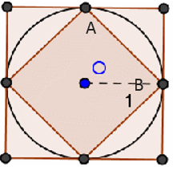
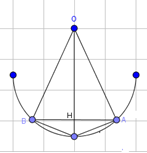
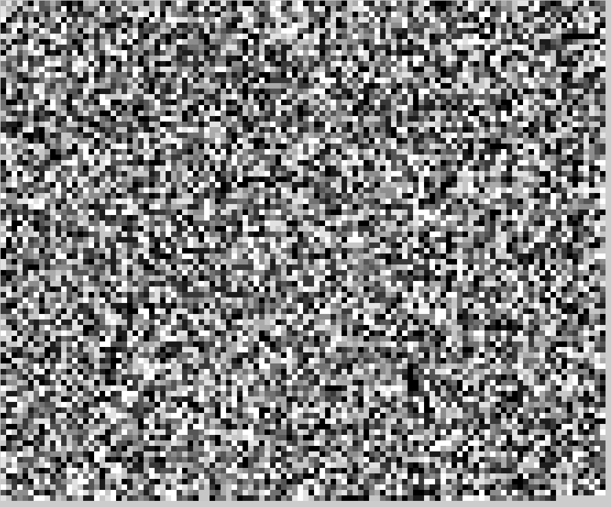

Il Pi Greco per definizione è una costante definita come rapporto tra una circonferenza e il suo diametro, tale rapporto è costante per qualsiasi
circonferenza. In termini numerici il Pi greco è un numero irrazionale, cioè un numero decimale illimitato non periodico.
Fin dall`antichità i popoli utilizzavano valori approssimati per esprimere il rapporto tra la circonferenza e il suo diametro, ma il primo ad
approssimare scientificamente pi greco fu Archimede di Siracusa, che, nel III secolo a.C, cercò di approssimare la lunghezza di una circonferenza con
le misure del perimetro di poligoni regolari inscritti e circoscritti alla circonferenza.
Perimetro dei poligoni regolari inscritti e circoscrittti ad una circonferenza

Come primo passaggio bisogna disegnare un poligono inscritto e uno circoscritto ad una stessa circonferenza di diametro di
misura 1 (lunghezza della circonferenza uguale a π). Il perimetro del poligono inscritto sarà la misura della circonferenza, e
quindi sarà un`approssimazione per difetto di π, mentre il perimetro del poligono circoscritto sarà un`approssimazione per
eccesso di π.
Inscriviamo e circoscriviamo in una circonferenza di centro O e di diametro 1 un poligono regolare (in questo caso un
quadrato), così possiamo ottenere la misura del lato utilizzando il teorema di Pitagora al triangolo AOB, rettangolo in O.
Quindi la misura del perimetro del quadrato inscritto è 2P=4√2/2=2√2, mentre la misura del perimetro
del quadrato circoscritto è 2P=4. Dunque π è compreso tra 2√2 e 4. Per ottenere un approssimazione migliore di π bisogna aumentare
il numero dei lati dei due poligoni.
Successivamente inscriviamo e circoscriviamo un ottagono e notiamo che l`ottagono circoscritto ha perimetro minore del
quadrato circoscritto mentre l`ottagono inscritto ha perimetro maggiore del quadrato circoscritto. Se indichiamo con p4 e p8
rispettivamente le misure dei perimetri del quadrato e dell`ottagono inscritti e con P4 e P8 quelle del quadrato e dell` ottagono
circoscritti abbiamo che:
p4 < p8< π < P8 < P4
Questo procedimento è valido per qualsiasi poligono regolare inscritto e circoscritto.
Per avere un approssimazione migliore di π dobbiamo supporre di conoscere la misura del lato ln di un poligono di n lati
inscritto in una circonferenza con raggio 1/2,dalla quale si ricava l2n del lato del poligono ottenuto raddoppiando i lati di
esso. Consideriamo AB lato del poligono regolare con n lati, mentre AC e CB sono lati del poligono con 2n lati. Quindi AB = ln e
AC = CB = l2n. Siccome AB è perpendicolare a OC. Possiamo applicare il teorema di Pitagora, prima del triangolo OHA e poi del
triangolo AHC e si ha:
Da cui applicando la formula per la trasformazione dei radicali doppia si ha:
{ l }_{ 2n }\quad =\quad \sqrt { \frac { 1 }{ 4 } \quad +\quad \frac { { \quad l }_{ n } }{ 4 } } -\sqrt { \frac { 1 }{ 4 } \quad -\quad \frac { { \quad l }_{ n } }{ 4 } } =\frac { 1 }{ 2 } \left( \sqrt { \left( 1\quad +{ \quad l }_{ n }\quad \right) } \quad -\quad \sqrt { \left( 1\quad -\quad { l }_{ n }\quad \right) } \right)
Quindi si ha che:
{ p }_{ n }\quad =\quad n\cdot { l }_{ n }\quad \rightarrow \quad { l }_{ n }\quad =\frac { { p }_{ n } }{ n } \quad \rightarrow { p }_{ 2n }\quad =\quad 2n\quad \cdot \quad { l }_{ 2n }
{ p }_{ 2n }\quad =\quad n\left( \sqrt { 1\quad +\quad \frac { { p }_{ n } }{ n } } -\quad \sqrt { 1\quad -\quad \frac { { p }_{ n } }{ n } } \quad \right)
Da cui:
{ p }_{ 2n }\quad =\quad n\left( \sqrt { 1\quad +\quad \frac { { p }_{ n } }{ n } } \quad -\quad \sqrt { 1\quad -\quad \frac { { p }_{ n } }{ n } } \quad \right)
Poichè la misura del perimetro è p4=2√2,dalla formula ottenuta possiamo ottenere la misura del perimetro dell`ottagono regolare inscritto.
Con questa formula possiamo ottenere la misura del poligono di 16 lati,da cui la misura di quello di 32 lati e così via. Lo stesso ragionamento
si può fare per i poligoni circoscritti. Con questi calcoli otteniamo che la misura del perimetro del poligono regolare inscritto di 4096 lati è
pari a 3,14159 mentre quello del poligono regolare circoscritto di 4096 lati è pari a 3,145932696 che sono una buona approssimazione per difetto
di π.
Come primo passaggio bisogna disegnare un poligono inscritto e uno circoscritto ad una stessa circonferenza di diametro di misura 1 (lunghezza della
circonferenza uguale a π). Il perimetro del poligono inscritto sarà la misura della circonferenza e quindi sarà un` approssimazione per difetto di π,
mentre il perimetro del poligono circoscritto sarà un`approssimazione per eccesso di π.
Area dei poligoni regolari inscritti e circoscrittti ad una circonferenza
Per determinare la misura dell`area del cerchio possiamo svolgere ragionamenti simili a quelli già fatti per la lunghezza delle circonferenze.
Consideriamo quindi un poligono regolare inscritto di n lati la cuoi misura è ln , esso è composto da n triangoli isosceli tutti congruenti tra
loro con vertice O. Poi tracciamo la mediana OH che è anche altezza,siccome il triangolo è isoscele.

In questo modo possiamo applicare il teorema di Pitagora al triangolo OAH:
\frac { 1 }{ 2 } AB\quad \cdot \quad OH\quad =\frac { 1 }{ 2 } { l }_{ n }\quad \cdot \quad \frac { 1 }{ w } \sqrt { 1\quad -\quad { \left( { l }_{ n } \right) }^{ 2 } } \quad \rightarrow \quad A\left( AOB \right) \quad =\frac { 1 }{ 4 } { l }_{ n }\sqrt { 1\quad -\quad { \left( { l }_{ n } \right) }^{ 2 } }
Se indichiamo con an la misura dell`area del poligono regolare inscritto di n lati, si ha allora:
{ a }_{ n }\quad =\quad \frac { n }{ 4 } { l }_{ n }\sqrt { 1\quad -\quad { \left( { l }_{ n } \right) }^{ 2 } }
Quindi se pn è la misura del perimetro del poligono, è ln=pn/n e otteniamo:
{ a }_{ n }\quad =\quad \frac { n }{ 4 } \cdot \frac { { p }_{ n } }{ n } \sqrt { 1\quad -\quad { \left( \frac { { p }_{ n } }{ n } \right) }^{ 2 } } \rightarrow \quad { a }_{ n }\quad =\quad \frac { { p }_{ n } }{ 4 } \sqrt { 1\quad -\quad { \left( \frac { { p }_{ n } }{ { n }^{ 2 } } \right) }^{ 2 } }
Ora per trovare l`area del poligono circoscritto di n lati dobbiamo considerare l`altezza di ogni triangolo che è 1/2 e se indichiamo con
Ln la misura del lato del poligono,allora l`area misurerà:
\frac { 1 }{ 2 } { L }_{ n }\cdot \frac { 1 }{ 2 } \quad =\quad \frac { 1 }{ 4 } { L }_{ n }
Avendo indicato con Pn la misura del perimetro si avrà Ln=Pn/n da cui:
{ A }_{ n }\quad =\quad \frac { { p }_{ n } }{ 4 } >/div>
Utilizzando queste formule si può notare che An è uguale ad Pn/4,siccome Pn è un`approssimazione di π si ha che la misura del l`
area del cerchio di diametro unitario è π/4.
Curiosità su Pi greco
Curiosità sulle cifre
Pi greco può sembrare un numero infinito che serve soltanto per calcolare lunghezza di una circonferenza e area di un cerchio,invece é ricco
di curiosità. Siccome ha un numero di cifre infinite senza mai avere una ripetizione,possiamo convertire la cifre di pi greco in lettere
(a=1,b=2)ottenendo qualsiasi parola concepita in qualsiasi combinazione,le cifre di pi greco possono comporre anche qualsiasi data,combinazione,
numeri di telefono e ecc…, oppure si può anche assegnare a ciascuna cifra una nota della scala musicale creando così una melodia.
Un` altra curiosità è quella scoperta da H.Bailey , P.Borwein e S. Plouffe utilizzando la seguente formula per calcolare l`
ennesima cifra di π senza dover dover calcolare tutte le cifre precedenti.
Anche se pi greco ha infinite cifre servono solo le prime 39 cifre per approssimare un qualsiasi calcolo
L`ultima cifra di pi greco che si è riusciti a calcolare è uno zero ed è la 2.000.000.000.000.000 cifra di pi greco scoperta da Nicholas
Sze con l`aiuto di Yahoo e Google.
La tecnica che ha usato, infatti, è stata quella del MapReduce, sviluppata da Google (e già rivelatasi molto utile in fisica e nella
criptogrfia),che ha contribuito a distribuire l`operazione semplificando notevolmente il processo. Suddividendo i problemi in tanti piccoli
sotto-problemi e il numero di cifre decimali calcolate, rispetto al precedente record di 5 trilioni (un trilione corrisponde a mille miliardi),
è semplicemente raddoppiato.
Il giorno di pi greco
Il giorno dedicato al Pi greco è il 14 marzo: la scelta è ispirata dalla grafia anglosassone del numero 3.14, grafia che indica l` approssimazione
ai centesimi di pi greco. Inoltre alcuni celebrano la ricorrenza dalle ore 15, in modo da adeguarsi all`approssimazione 3.1415.
La prima celebrazione del "Pi Day" si tenne nel 1988 all'Exploratorium di San Francisco, per iniziativa del fisico statunitense Larry Shaw, in
seguito insignito del titolo di "Principe del pi greco". Il calendario della prima manifestazione prevedeva un corteo circolare attorno ad uno degli
edifici del museo e la vendita di torte alla frutta, decorate con le cifre decimali del pi greco.
In questi giorni nei dipartimenti di matematica in varie istituzioni nel mondo si coglie l'occasione per organizzare delle feste. La celebrazione
avviene anche in comunità virtuali come Second Life e Facebook.
Il 14 marzo 2010 Google ha reso omaggio alla giornata del pi greco con una versione artistica del proprio logo.
Questo è Pi greco!
Questa immagine mostra le prime 11.000 di cifre di Pi greco, ognuna delle quali è rappresentata da un quadratino di diverso colore disegnati in sequenza, da totalmente bianco a totalmente nero in base alla cifra che rappresenta, infatti più la cifra sarà vicina allo 0 e più il quadrato sarà di un colore chiaro, diventando sempre più scuro fino ad arrivare al numero 9, rappresentato da un quadratino tutto nero.
Clicca qui per scaricare la versione da 1 milione di cifre e qui per il codice che produce questa immagine.

Il suono di Pi greco!
Abbiamo visto come si vede Pi greco, ma come si sente?
Questo audio contiene 15 secondi nei quali vengono riprodotte le sue cifre in sequenza con un intervallo fra una e l'altra di 90 millisecondi, viene riprodotta una certa frequenza per ogni cifra, le frequenze vanno dai 200 hz ai 900 hz. Più la cifra sarà bassa, più la frequenza sarà vicina ai 200 hz, viceversa se la cifra sarà alta la frequenza sarà vicina ai 900 hz.
Clicca qui per il codice che produce questo audio.